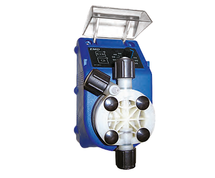

EMD

NUEVA BOMBA ELECTROMAGNETICA MUCHO MAS EFICIENTE PARA CLORINACION Y CONTROL
Esta serie de bombas dosificadoras electromagnéticas compactas han sido especialmente concebidas y desarrolladas para satisfacer los requerimientos actuales de funcionalidad, economía de espacio y necesidad de lograr a bajo costo y mínimo mantenimiento la respuesta más adecuada en potabilización y tratamiento de agua en general.
CARACTERISTICAS
- Cabezal en Kynar Alta resistencia química en todas sus partes en contacto con el fluido bombeado, (cabezal PVDF-Kynar )
- Accionamiento electromagnético de respuesta segura y alta eficiencia.
- Regulación de caudal por frecuencia en forma digital con panel de LED (operable con la unidad en marcha) de fácil visualización.
- Diafragma especialmente diseñado y fabricado en PTFE , altamente resistente.
- Cabezal con doble válvula en succión e inyección.
- Doble escala de regulación. / normal 10 a 100 / micro regulacion de 1 a 10
- Cabezal con doble esfera (Doble válvula en succión e inyección)